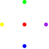

6.0.0.2
Reference
Representation
This section describes the representation of the MetaPict concepts.
|
| #:extra-constructor-name make-pt) |
| x : real? |
| y : real? |
The
pt structure represents a point with coordinates
(
x,y)
in the current coordinate system.
| > (def A (pt 3 4)) |
|
| > A |
(pt 3 4) |
| > (defm (pt x y) A) |
|
| > (list x y) |
'(3 4) |
| > (penwidth 4 (draw (pt 0 0) (pt 1/2 1/2) (pt 1 0))) |

|
|
| #:extra-constructor-name make-vec) |
| x : real? |
| y : real? |
The
vec structure represents a mathematical vector with coordinates
(
x,y)
in the current coordinate system.
| > (def v (vec 3 4)) |
|
| > v |
(vec 3 4) |
| > (defm (vec x y) v) |
|
| > (list x y) |
'(3 4) |
| > (def O origo) |
|
| > (with-window (window -1 5 -1 5) | | (ahlength (px 5)) | | (draw-arrow (curve O -- (pt+ O v)))) |
|

|
| (struct | | bez (p0 p1 p2 p3) |
|
| #:extra-constructor-name make-bez) |
| p0 : pt? |
| p1 : pt? |
| p2 : pt? |
| p3 : pt? |
The
bez structure represents a cubic Bezier curve with start point
in
p0, end point in
p3 and control points in
p1 and
p2.
| > (with-window (window -1 6 -1 6) | | (draw (bez (pt 0 0) (pt 0 1) (pt 2 3) (pt 5 0)))) |
|

|
2 Points and Vectors (pt and vec)
2.1 Points and Vectors
Points and vectors are represented as pt and vec structures respectively.
Think of points as positions and of vectors as displacements.
|
| #:extra-constructor-name make-pt) |
| x : real? |
| y : real? |
The
pt structure represents a point with coordinates
(
x,y)
in the current coordinate system.
| > (def A (pt 3 4)) |
|
| > A |
(pt 3 4) |
| > (pt-x A) |
3 |
| > (penwidth 4 (draw (pt 0 0) (pt 1/2 1/2) (pt 1 0))) |
|
|
| #:extra-constructor-name make-vec) |
| x : real? |
| y : real? |
The
vec structure represents a vector with coordinates
(
x,y)
in the current coordinate system.
| > (def v (vec 3 4)) |
|
| > v |
(vec 3 4) |
| > (vec-x v) |
3 |
2.1.1 Predefined Points and Vectors
The most common points and vectors have predefined names.
Origo (0,0) is the reference point of the coordinate system.
The compass directions as
vecs.
Alternative directions names. Note that the direction names makes sense only if, the
current coordinate system has a positive orientation.
2.1.2 Point Operations
Let the coordinates of A, B and v be
A=(a1,a2), B=(b1,b2), and, v=(v1,v2).
The form (pt+ A v) returns the displacement of the point
A with the vector v.
That is, (a1+v1,a2+v2) is returned.
The form (pt+ A B) adds the coordinates of A and B pairwise.
The point A is thus displaced with the vector OB.
That is, (a1+b1,a2+b2) is returned.
The form (pt+) returns origo, (pt 0 0).
The form (pt+ A) returns the point A.
The form
(pt+ A B-or-v ...) returns the result of
(pt+ (pt+ A B-or-v) ...).
The form
(pt- B A) returns the vector
AB. That is, if
A=(a1,a2) and
B=(b1,b2), then
(
b1-a1,b2-a2)
is returned.
The form (pt- A v) returns the displacement of the point A with
the opposite of vector v. If A=(a1,a2) and v=(v1,v2) then
the vector (a1-v1,a2-v2) is returned.
The form
(pt- A) returns the reflection of the point
A with respect to origo.
If
A=(
a1
,a2
)
, then the vector
(
-a1
,-a2
)
is returned.
Scale the coordinates of A with s.
If the coordinates of A are (x,y) then the point (sx,sy) is returned.
| > (pt* 3 (pt 1 2)) |
(pt 3 6) |
Return the distance between the points A and B.
The distance from (x,y) to (a,b) is sqrt((x-a)2 + (y-b)2).
Returns #t if the coordinates of the point A and B are
equal with respect to =. Otherwise #f is returned.
(pt~ A B ε) → boolean?
|
| A : pt? |
| B : pt? |
| ε : 1e-15 |
Returns #t if the distance from the point A to the point is
less than or equal to ε. The default value of ε is 1e-15.
The mediate function
med computes points between points
A
and
B (if
0
<=r<=1
). The mediation operation is also known
as
linear interpolation.
The form (med 1/3 A B) returns the point that lies
one-third of the way from A to B.
In general
(med r A B) returns the point
(
1
-r)
A + rB.
| > (def A (pt 0 0)) |
|
| > (def B (pt 2 1)) |
|
| > (list (med 0 A B) (med 1/3 A B) (med 1/2 A B) (med 2/3 A B) (med 1 A B)) |
(list (pt 0 0) (pt 2/3 1/3) (pt 1 1/2) (pt 4/3 2/3) (pt 2 1)) |
| > (set-curve-pict-size 100 50) |
|
| > (with-window (window -0.2 2.2 -0.1 1.1) | | (penwidth 4 (draw* (for/list ([r '(0 1/3 1/2 2/3 1)] | | [c '("red" "orange" "yellow" "green" "blue")]) | | (color c (draw (med r A B))))))) |
|

|
(pt@ r θ) → pt?
|
| r : real? |
| θ : real? |
Returns the point with polar coordinations (r,θ).
That is, the point is on the circle with center (0,0) and radius r.
The angle from the x-axis to the line through origo and the point is θ.
The angle θ is given in radians (0 rad = 0 degrees, π rad = 180 degrees).
| > (require racket/math) |
|
| > (set-curve-pict-size 50 50) |
|
| > (with-window (window -1.1 1.1 -1.1 1.1) | | (penwidth 4 (draw* (for/list ([θ (in-range 0 (* 2 pi) (/ (* 2 pi) 12))]) | | (pt@ 1 θ))))) |
|

|
(pt@d r θ) → pt?
|
| r : real? |
| θ : real? |
Same as
pt@ but the angle is in degrees.
| > (pt@d 1 45) |
(pt 0.7071067811865476 0.7071067811865475) |
| > (pt@ 1 (/ pi 4)) |
(pt 0.7071067811865476 0.7071067811865475) |
2.1.3 Vector Operations
In this section the coordinates of vecs v and w
will be referred to as v=(v1,v2) and w=(w1,w2).
Returns the vector sum of v and w, that is
the vector (v1+w1,v2+w2) is returned.
In terms of displacements the vector sum v+w can be
thought of as the result of the displament v followed by
the displacement w.
| > (def v (vec 2 0)) |
|
| > (def w (vec 0 3)) |
|
| > (def v+w (vec+ v w)) |
|
| > v+w |
(vec 2 3) |
| > (define (arrow v [offset (vec 0 0)]) | | (def A (pt+ origo offset)) | | (draw-arrow (curve A -- (pt+ A v)))) |
|
|
| > (ahlength (px 12)) |
|
| > (with-window (window -0.2 3.2 -0.2 3.2) | | (penwidth 2 | | (draw (color "red" (arrow v)) | | (color "green" (arrow w v)) | | (color "blue" (arrow v+w))))) |
|

|
Returns the vector difference of v and w, that is
the vector (v1-w1,v2-w2) is returned.
Scale the coordinates of v with s.
If the coordinates of v are (x,y) then the vector (sx,sy) is returned.
Converts the vector (x,y) into a point with the same coordinates.
If a point A has the same coordinates as a vector v, then
the vector is said to a position vector for the point and OA=v.
Converts the point p into a vector with the same coordinates.
Such a vector is also called a position vector, hence the name.
| > (pos (pt 1 2)) |
(vec 1 2) |
Returns #t if the coordinates of the vectors v and w are
equal with respect to =. Otherwise #f is returned.
Returns #t if the length of v-w is less than or equal to ε.
The default value of ε is 1e-15.
Returns the dot product of the vectors v and w.
The dot product is the number v1 w1 + v2 w2.
The dot product of two vectors are the same as the product of the lengths
of the two vectors times the cosine of the angle between the vectors.
Thus the dot product of two orthogonal vectors are zero, and the
dot product of two vectors sharing directions are the product of their lengths.
Returns the square of the length of the vector v.
Returns the length of the vector v.
Returns the unit vector whose angle with the first axis is α radians.
| > (dir/rad 0) |
(vec 1 0) |
| > (dir/rad (/ pi 2)) |
(vec 6.123233995736766e-17 1.0) |
Returns the unit vector whose angle with the first axis is α degrees.
| > (dir 0) |
(vec 1 0) |
| > (dir 90) |
(vec 6.123233995736766e-17 1.0) |
Returns the vector of length r whose angle with the first axis is α radians.
In other words construct a vector form polar coordinates.
| > (vec@ 2 0) |
(vec 2 0) |
| > (vec@ 2 pi) |
(vec -2.0 2.4492935982947064e-16) |
Returns the polar coordinates of the point or vector.
Rotates the point or vector 90 or -90 degrees around origo.
3 Colors
(make-color* name) → (is-a?/c color%)
|
| name : string? |
| (make-color* r g b α) → (is-a?/c color%) |
| r : real? |
| g : real? |
| b : real? |
| α : 1.0 |
The function
make-color* is a fault tolerant version of
make-color
that also accepts color names.
Given a color name as a string, make-color* returns a color% object.
Given real numbers to use as the color components, make-color* works
like make-color, but accepts both non-integer numbers, and
numbers outside the range 0–255. For a real number x the value
used is (min 255 (max 0 (exact-floor x))).
The optional argument α is the transparency. The default value is 1.
Given a transparency outside the interval 0–1 whichever value of 0 and 1 is
closest to α is used.
(color c p) → pict?
| | c : (is-a?/c color%) | | p : pict? | | (color f c p) → pict? | | f : real? | | c : (is-a?/c color%) | | p : pict? |
|
In an expression context
(color c p) is equivalent to
(colorize p c)
and
(color f c p) is equivalent to
(colorize p (color* f c)).
As a match pattern (color r g b a) matches both color% objects
and color names (represented as strings). The variables r,
g, and, b will be bound to the red, green, and, blue components
of the color. The variable a will be bound to the transparency.
| > (with-window (window 0 1 0 1) | | (apply beside (for/list ([f (in-range 0 11/10 1/10)]) | | (color f "red" (fill unitsquare))))) |
|

|
| > (require racket/match) |
|
| > (match "magenta" | | [(color r g b a) (list r g b a)]) |
|
'(255 0 255 1.0) |
Returns a list of the color components and the transparency of the color c.
The color can be a color% object or a color name (string).
Returns a color% objects, whose color components are
the components of c1 and c2 added componentwise.
The transparency is (min 1.0 (+ α1 α2)) where
α1 and α2 the transparencies of the two colors.
Returns a color% object, whose color components are the
components of c multiplied componentwise with k.
The transparency is the same as in c.
Interpolates linearly between the colors c1 and c2.
For t=0 the color c1 is returned, and when
t=1 the color c2 is returned.
| > (with-window (window 0 1 0 1) | | (apply beside (for/list ([t (in-range 0 11/10 1/10)]) | | (color (color-med t "red" "yellow") | | (fill unitsquare))))) |
|

|
Interpolates linearly between the colors in the list cs.
For "t=0" corresponds to the first color in the list,
and "t=1" corresponds to the last color.
| > (with-window (window 0 1 0 1) | | (apply beside (for/list ([t (in-range 0 11/10 1/10)]) | | (color (color-med* t '("red" "yellow" "blue" "green")) | | (fill unitsquare))))) |
|
|
Returns a color objects like c where one component has been changed to r.
4 Bezier Curves
A Bezier curve from point A to point B with
control points A+ and B- is represented as
an instance of a bez structure: (bez A A+ B- B).
Graphically such a curve begins at point A and ends in point B.
The direction in which the curve leaves point A is directed towards
the control point A+. The direction in which the curve enters the
end point B is direction from B-.
The points A and B are referred to as start and end point
of the Bezier curve. The points A+ and B- are refererred
to as control points. The point A+ is the post control of A
and the point B- is the pre control of B.
Most users will not have reason to work with bez structures directly.
The curve constructor is intended to cover all use cases.
Each point on the Bezier curve is corresponds to a real number t between 0 and 1.
The correspondance is called a parametrization of the curve. The number t
is called a parameter. Thus for each value of the parameter t between 0 and 1,
you get a point on the curve. The parameter value t=0 corresponds to the start
point A and the parameter value t=1 corresponds to the end point.
Let’s see an example of a Bezier curve and its construction.

Return the point on the Bezier curve b that corresponds to the parameter value t.
De Casteljau’s algorithm is used to compute the point.
| > (def b (bez (pt 0 0) (pt 0 1) (pt 3 2) (pt 5 0))) |
|
|
(list (pt 0 0) (pt 7/4 9/8) (pt 5 0)) |
Returns #t if the defining points of the two Bezier curves
are within a distance of ε. The default value of ε=0.0001 was chosen
to mimick the precision of MetaPost.
Returns a
bez representing a Bezier curve whose graph is the same as
the graph of the Bezier curve
b, but has the reverse orientation.
| > (def b (bez (pt 0 0) (pt 0 1) (pt 3 2) (pt 5 0))) |
|
| > (def (γ t) (point-of-bez b t)) |
|
| > (def (φ t) (point-of-bez (bez-reverse b) t)) |
|
| > (def ts (in-range 0 5/4 1/4)) |
|
| > (cons 'γ (for/list ([t ts]) (γ t))) |
(list 'γ (pt 0 0) (pt 1/2 45/64) (pt 7/4 9/8) (pt 27/8 63/64) (pt 5 0)) |
| > (cons 'φ (for/list ([t ts]) (φ t))) |
(list 'φ (pt 5 0) (pt 27/8 63/64) (pt 7/4 9/8) (pt 1/2 45/64) (pt 0 0)) |
Given a Bezier curve
b from
p0 to
p3 with control
points
p1 and
p2, split the Bezier curve at time
t
in two parts
b1 (from
p0 to
b(
t)
) and
b2
(from
b(
t)
to
p3),
such that
(point-of-bez b1 1) =
(point-of-bez b2 0)
and the graphs of
b1 and
b2 gives the graph of
b.
| > (def b (bez (pt 0 0) (pt 0 1) (pt 3 2) (pt 5 0))) |
|
| > (defv (b1 b2) (split-bez b 1/3)) |
|
| > (with-window (window -1 6 -1 6) | | (penwidth 4 | | (draw (color "red" (draw b1)) | | (color "blue" (draw b2))))) |
|
 |
Given a Bezier curve b return a new Bezier curve c,
such that c(0)=b(t0) and c(1)=b(t1) and
such that the graph of c is a subset of the graph of b.
| > (def b (bez (pt 0 0) (pt 0 1) (pt 3 2) (pt 5 0))) |
|
| > (with-window (window -1 6 -1 6) | | (for/draw ([t (in-range 0 5/4 1/4)] | | [c '("red" "blue" "green" "magenta")]) | | (penwidth 4 | | (beside (draw b) | | (color c (draw (bez-subpath b t (+ t 1/4)))))))) |
|

|
Note: The example show that the parameterization is not an arc-length (aka unit-speed)
parameterization.
If the graphs of the Bezier curves intersect, then their
first intersection point is returned. If there are no intersections,
then #f is returned.
If the graphs of the Bezier curves intersect numbers t1 and t2
such that b1(t1)=b2(t2) are returned. If there are more than one
intersection, the parameter values for the first intersection is returned.
If no such numbers exist the result is (values #f #f).
If the graphs of the Bezier curves intersect a list of the intersection point
and two numbers t1 and t2 such that b1(t1)=b2(t2) is returned.
If there are more than one intersection, the parameter values for the first
intersection is returned. If no such numbers exist the result is (values #f #f).
| (draw-bez | | dc | | | | | | | | b | | | | | | | [ | #:transformation t | | | | | | | | #:pen-transformation pent]) | | → | | (void) |
|
| dc : (is-a dc<%>) |
| b : bez? |
| t : trans? = #f |
| pent : trans? = #f |
Draws the Bezier curve b on a drawing context dc with
optional transformation t and pen-transformation pent.
| (draw-bezs | | dc | | | | | | | | bs | | | | | | | [ | #:transformation t | | | | | | | | #:pen-transformation pent]) | | → | | (void) |
|
| dc : (is-a dc<%>) |
| bs : (listof bez?) |
| t : trans? = #f |
| pent : trans? = #f |
Draws the Bezier curves bs on the drawing context dc with
optional transformation t and pen-transformation pent.
Convert the Bezier curve b into a dc-path%.
If the optional transformation t is present, it is applied
to b before the conversion.
Convert the "consecutive" Bezier curves bs into a dc-path%.
If the optional transformation t is present, it is applied
to te bs before the conversion.
Returns a
bez structure representing a Bezier curve from
p0 to
p3
that leaves
p0 in the direction of
w0
and arrives in
p3 from the the direction of
w0
with tensions
t0 and
t3 respectively.
| > (defv (p0 p3 w0 w3 τ0 τ3) (values (pt 0 0) (pt 5 0) (vec 0 1) (vec 0 -1) 1 1)) |
|
| > (def b (bez/dirs+tensions p0 p3 w0 w3 τ0 τ3)) |
|
| > b |
(bez | (pt 0 0) | (pt 2.041077998578922e-16 3.333333333333333) | (pt 5.000000000000001 -3.333333333333335) | (pt 5 0)) |
|
| > (with-window (window -5 11 -5 11) (draw b)) |

|
Returns a
bez structure representing a Bezier curve from
p0 to
p3
that leaves
p0 with an angle of
θ
and arrives in
p3 with an angle of
φ
with tensions
t0 and
t3 respectively.
| > (defv (p0 p3 θ φ τ0 τ3) (values (pt 0 0) (pt 5 0) pi/2 -pi/2 1 1)) |
|
| > (defv (p1 p2) (control-points p0 p3 θ φ τ0 τ3)) |
|
| > (def b (bez p0 p1 p2 p3)) |
|
| > b |
(bez | (pt 0 0) | (pt 2.041077998578922e-16 3.333333333333333) | (pt 5.0 -3.333333333333333) | (pt 5 0)) |
|
| > (with-window (window -5 11 -5 11) (draw b)) |
|